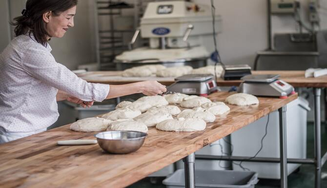
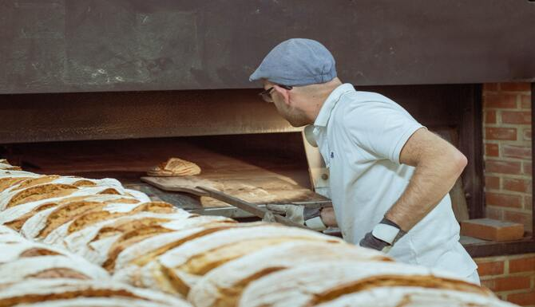

Our Story
1975: Antoinette Petite works as a artisan-baker in Paris.
1987: Antoinette moves to Australia and becomes mother of two children named Dominique and Guillaume
2007: Dominique and Guillaume begin their apprenticehship as a baker
2012: After a lot of years of experience the family founded Petite Treats in Kirwan near Willows Shopping Centre.
2013: Petite Treats wins the award "Queensland's bakery of the year"
We are...
a small family-run local businessspecialized in traditional Australien baked goods
traditional artisan baker combining seasonal fresh ingredients
Our Clients
Since our opening last year, we have many customers of young families and young people ranging from 17-35 years.
Moreover we also provide well known institutions like:
What our clients think about us...
“Petite Treats has the best cheesecake I’ve ever had. Always fresh, and melts in the mouth. Would recommend highly!”
- A student from the James Cook University“I’m addicted to the Danish pastries and always drop in here on my way to work.”
- A young worker from TelstraOur Team
Our bakery team consists of Antoinette, Dominique and Guillaume. We are looking forward to serve you the best cakes in Kirwan!
 